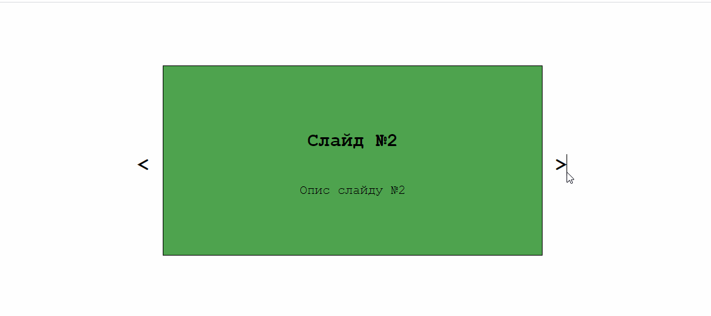
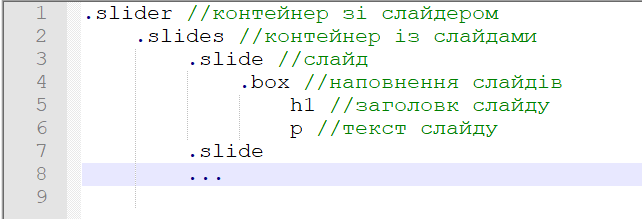
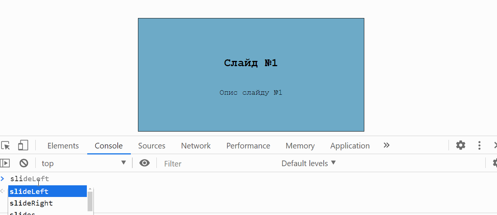
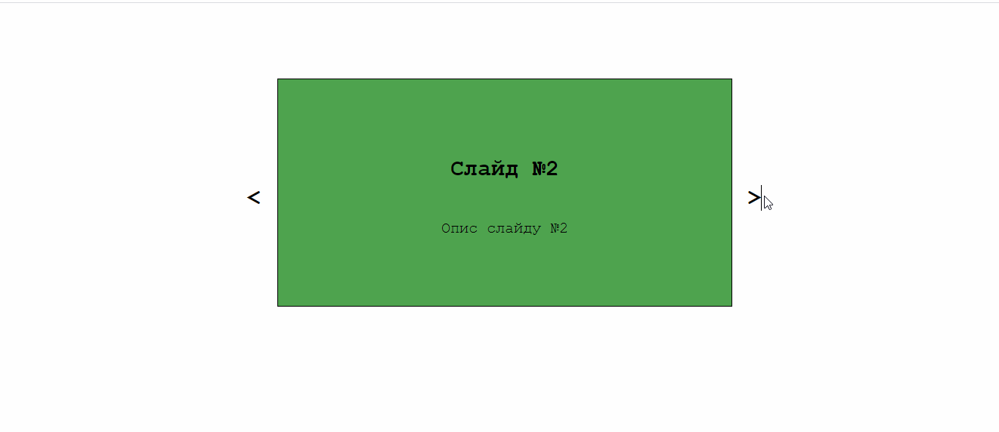

Тема 29.
1. Створіть слайдер виконуючи задання покроково.

2. Створіть верстку із вчителем викорстовуючи такий порядок класів:

3. Створіть дві функції slideRight та slideLeft для зміни слайду вправо і вліво

4. Додайте кнопки та привяжіть до них функції для зміни слайду
